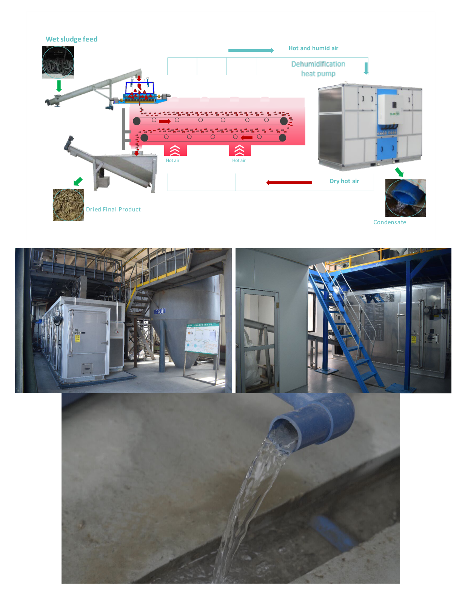

Drying: Making Solids Transportable and Stable
Once the microscreen and screw press have removed most of the water mechanically, thermal drying becomes much more practical. This stage can produce a stable, transportable material and may allow a utility to stop here before adding pyrolysis.

Low-temperature belt dryer flow concept from the Shincci brochure.
Why heat-pump drying fits FECR
Low-temperature heat-pump dryers recycle heat within a closed system. They are especially relevant when the incoming cake is already relatively dry, because drying cost is largely water-removal cost.
This page should stay vendor-neutral while using commercial systems as examples.
Stage value: A utility may implement microscreening plus drying to produce Class A biosolids and reduce hauling, even before committing to pyrolysis.
Dry material becomes a practical feedstock for the next optional stage: pyrolysis.